Rewrite¶
from lambeq.backend.grammar import Cup, Diagram, Id, Word
from lambeq.backend.drawing import draw
from lambeq import AtomicType
N = AtomicType.NOUN
S = AtomicType.SENTENCE
from lambeq import Rewriter
rewriter = Rewriter()
Auxiliary rule¶
diagram = ((Word('we', N) @ Word('will', (N >> S) << (N >> S)) @
Word('go', N >> S)) >>
Cup(N, N.r) @ Id(S) @ Diagram.cups((N >> S).l, N >> S))
draw(diagram)
print('↓ rewriting (auxiliary rule)')
draw(Rewriter(['auxiliary'])(diagram))
print('↓ normal form')
draw(rewriter(diagram).normal_form())
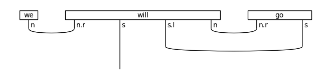
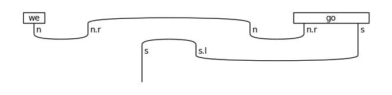
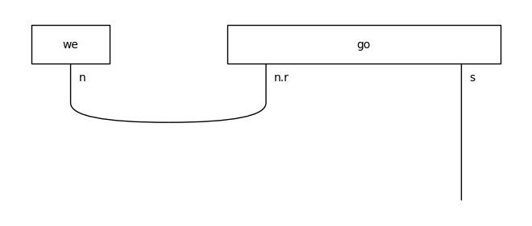
↓ rewriting (auxiliary rule)
↓ normal form
Connector rule¶
diagram = ((Word('I', N) @ Word('hope', N >> S << S) @
Word('that', S << S) @ Word('this', N) @
Word('succeeds', N >> S)) >>
(Cup(N, N.r) @ Id(S) @ Cup(S.l, S) @
Diagram.cups((N >> S).l, N >> S)))
draw(diagram)
print('↓ rewriting (connector rule)')
Rewriter(['connector'])(diagram).draw()
print('↓ normal form')
rewriter(diagram).normal_form().draw()
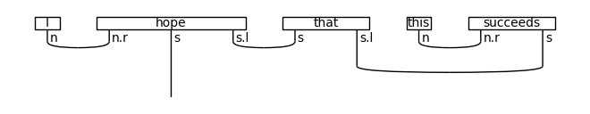
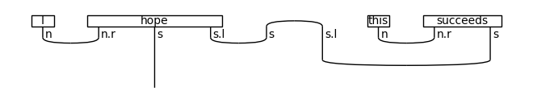
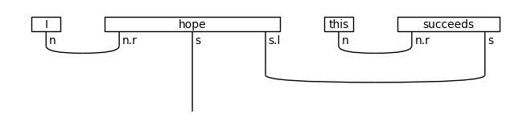
↓ rewriting (connector rule)
↓ normal form
Determiner rule¶
diagram = (Word('the', N << N) @ Word('book', N) >>
Id(N) @ Cup(N.l, N))
draw(diagram)
print('↓ rewriting (determiner rule)')
draw(Rewriter(['determiner'])(diagram))
print('↓ normal form')
draw(rewriter(diagram).normal_form())
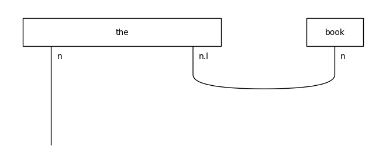
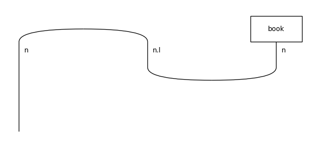
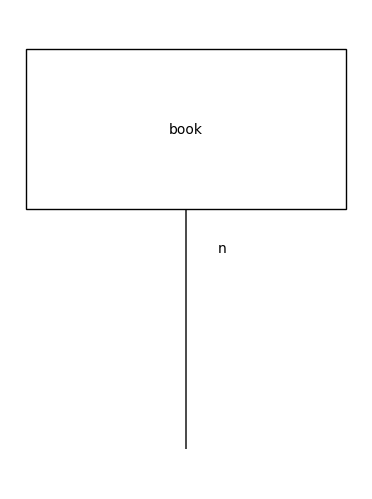
↓ rewriting (determiner rule)
↓ normal form
Adverb rules¶
cod = (N >> S) >> (N >> S)
diagram = (Word('we', N) @ Word('go', N >> S) @ Word('quickly', cod) >>
Diagram.cups(cod[:3].l, cod[:3]) @ Id(S))
draw(diagram)
print('↓ rewriting (postadverb rule)')
draw(Rewriter(['postadverb'])(diagram))
print('↓ normal form')
draw(rewriter(diagram).normal_form())
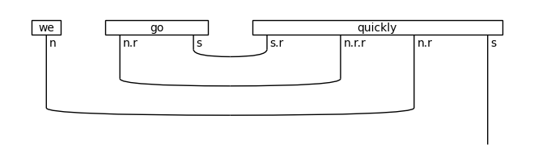
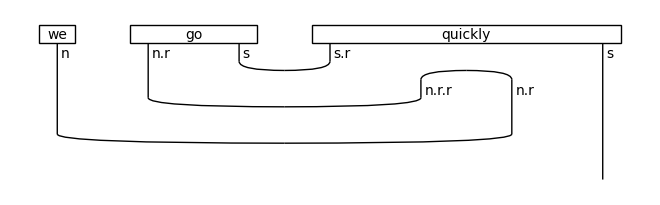
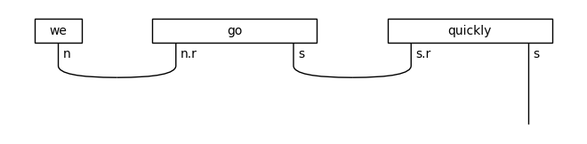
↓ rewriting (postadverb rule)
↓ normal form
diagram = ((Word('we', N) @ Word('quickly', (N >> S) << (N >> S)) @
Word('go', N >> S)) >>
Cup(N, N.r) @ Id(S) @ Diagram.cups((N >> S).l, N >> S))
draw(diagram)
print('↓ rewriting (preadverb rule)')
draw(Rewriter(['preadverb'])(diagram))
print('↓ normal form')
draw(rewriter(diagram).normal_form())
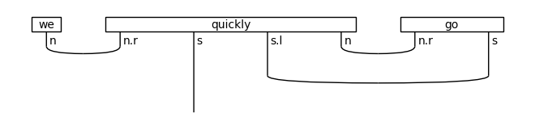
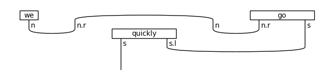
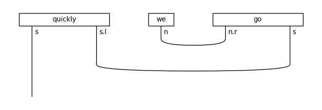
↓ rewriting (preadverb rule)
↓ normal form
Prepositional phrase rule¶
cod = (N >> S) >> (N >> S << N)
diagram = ((Word('I', N) @ Word('go', N >> S) @ Word('to', cod) @
Word('bed', N)) >>
Diagram.cups(cod[:3].l, cod[:3]) @ Id(S) @ Cup(N.l, N))
draw(diagram)
print('↓ rewriting (prepositional phrase rule)')
draw(Rewriter(['prepositional_phrase'])(diagram))
print('↓ normal form')
draw(rewriter(diagram).normal_form())
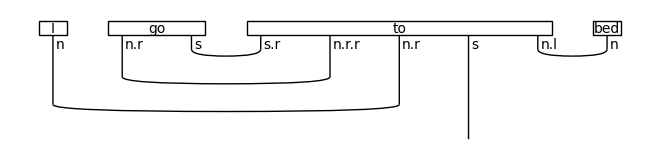
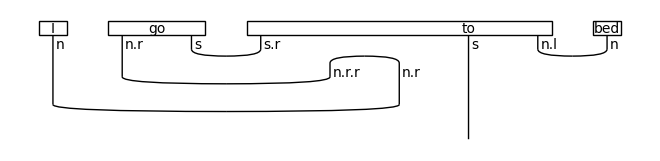
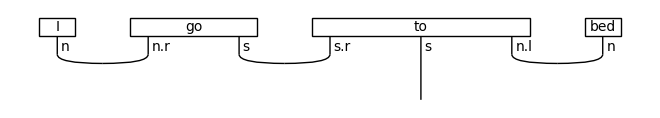
↓ rewriting (prepositional phrase rule)
↓ normal form
Relative Pronoun rules¶
cows = Word('cows', N)
that_subj = Word('that', N.r @ N @ S.l @ N)
that_obj = Word('that', N.r @ N @ N.l.l @ S.l)
eat = Word('eat', N >> S << N)
grass = Word('grass', N)
rewriter = Rewriter(['subject_rel_pronoun'])
diagram = Id().tensor(cows, that_subj, eat, grass)
diagram >>= Cup(N, N.r) @ Id(N) @ Diagram.cups(S.l @ N, N.r @ S) @ Cup(N.l, N)
draw(diagram)
print('↓ rewriting (subject relative pronoun rule)')
draw(Rewriter(['subject_rel_pronoun'])(diagram))
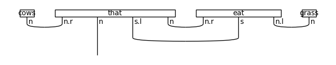
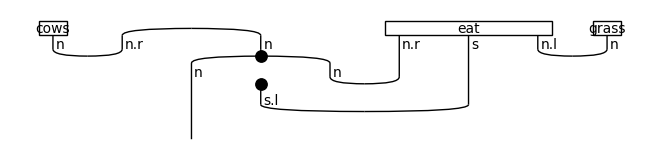
↓ rewriting (subject relative pronoun rule)
diagram = Id().tensor(grass, that_obj, cows, eat)
diagram >>= Cup(N, N.r) @ Id(N) @ Id(N.l.l @ S.l) @ Cup(N, N.r) @ Id(S @ N.l)
diagram >>= Id(N) @ Diagram.cups(N.l.l @ S.l, S @ N.l)
draw(diagram)
print('↓ rewriting (object relative pronoun rule)')
draw(Rewriter(['object_rel_pronoun'])(diagram))
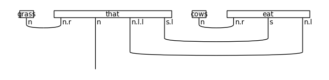
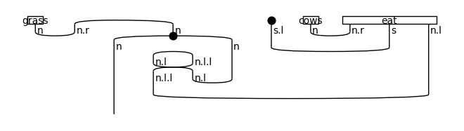
↓ rewriting (object relative pronoun rule)
Coordination¶
diagram = (Word('eggs', N) @ Word('and', N >> N << N)
@ Word('ham', N) >> Cup(N, N.r) @ Id(N) @ Cup(N.l, N))
draw(diagram)
print('↓ rewriting (coordination rule)')
draw(Rewriter(['coordination'])(diagram))
print('↓ normal form')
draw(Rewriter(['coordination'])(diagram).normal_form())
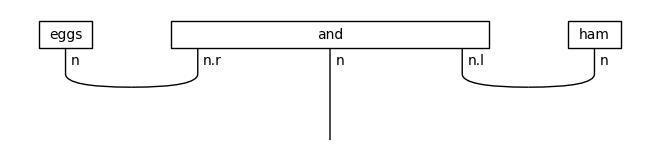
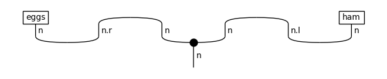
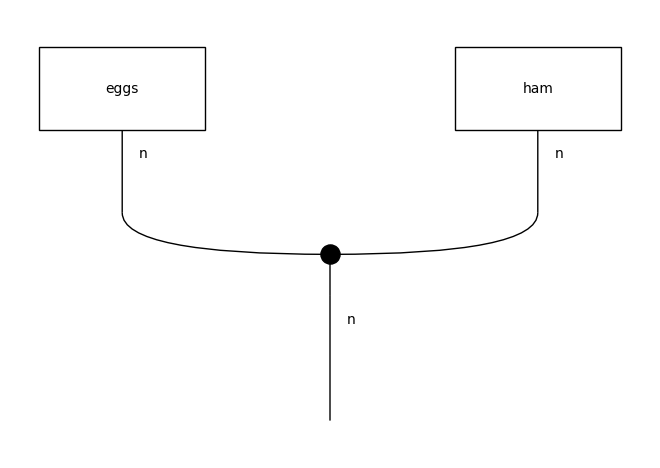
↓ rewriting (coordination rule)
↓ normal form
Remove cups¶
from lambeq import RemoveCupsRewriter
diagram = (Word('I', N) @ Word('love', N >> S << N)
@ Word('cheese', N) >> Cup(N, N.r) @ Id(S) @ Cup(N.l, N))
remove_cups = RemoveCupsRewriter()
draw(diagram)
print('↓ remove cups by bending wires')
remove_cups(diagram).draw()
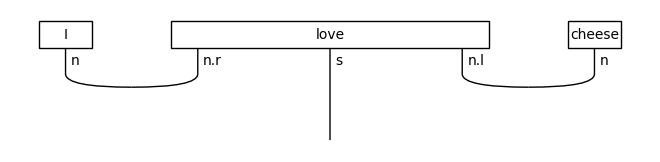
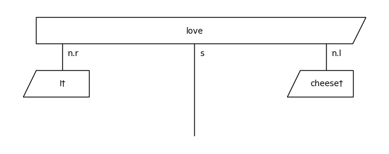
↓ remove cups by bending wires
Curry functor¶
rewriter = Rewriter(['curry'])
diagram = (
Word('I', N) @ Word('see', N >> S << N) @
Word('dead', N @ N.l) @ Word('people', N) >>
Cup(N, N.r) @ Id(S) @ Cup(N.l, N) @ Cup(N.l, N)
)
draw(diagram)
print('↓ rewrite by using the map-state duality')
rewriter(diagram).draw()
print('↓ normal form')
rewriter(diagram).normal_form().draw()
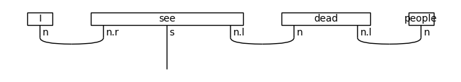
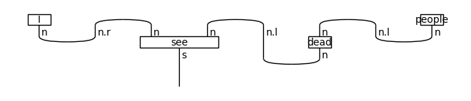
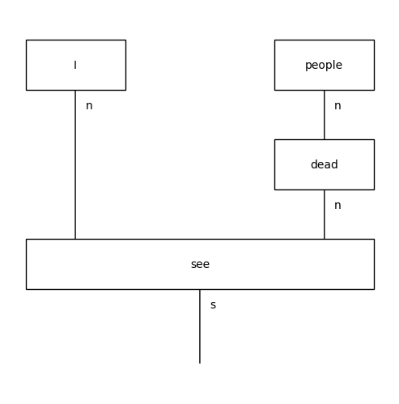
↓ rewrite by using the map-state duality
↓ normal form